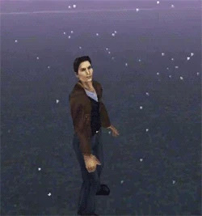

Silent Hill (videojuego)
"Silent Hill" se refiere a múltiples temas. Para otros usos, ver Silent Hill.
Silent Hill es la primera entrega de la serie de videojuegos de terror psicológico y survival horror Silent Hill. El juego fue desarrollado por Team Silent y publicado por Konami.
Fue lanzado para la Sony PlayStation en Norteamérica el 23 de febrero de 1999. Se relanzó en la PlayStation Store para PlayStation Portable y PlayStation 3, pero no para PlayStation Vita (sin embargo, se puede jugar en la Vita a través del uso a distancia de PS3 o transfiriendo el juego manualmente desde la PS3) ni para PlayStation 4.
Silent Hill 3 es una secuela directa ambientada diecisiete años después del juego, mientras que Silent Hill: Origins es una precuela que tiene lugar siete años antes. Silent Hill: Shattered Memories es una reinvención del juego ambientada en otro universo, compartiendo su premisa inicial. Ha recibido múltiples adaptaciones, incluyendo Play Novel: Silent Hill, una película estrenada en 2006, el juego móvil Silent Hill DX, y el próximo videojuego del mismo nombre desarrollado por Bloober Team.
